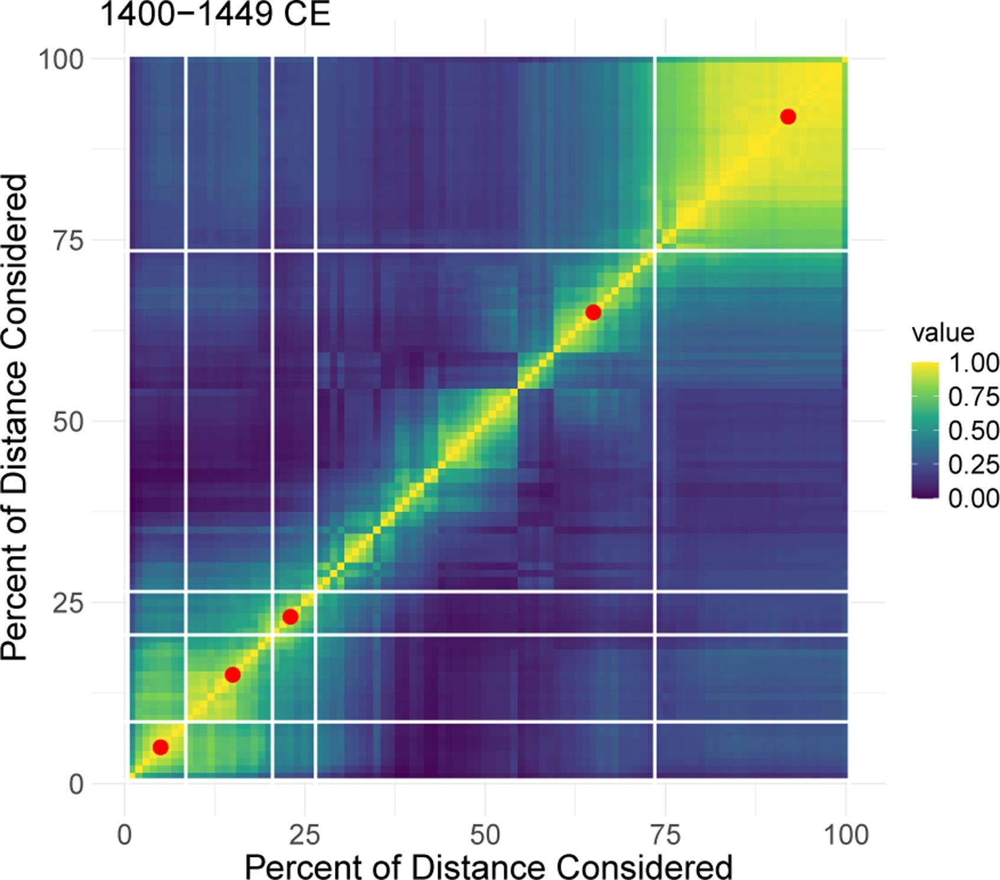

Reanalysis Report
In Archaeological networks, community detection, and critical scales of interaction in the U.S. Southwest/Mexican Northwest, Peeples & Bischoff aim to identity what they call critical scales between communities in the SW/NW region. To do this, they use the similarity of ceramic ware styles between sites across distance to determine the bounds of ancient communities.
Breaking this work down into steps, they use a list of SWSN sites, ceramic types, ceramic wares, and UTM coordinates (stored in 3 different .csv files) to subset the periods and sites they’re interested in before conducting Louvain method tests of community detection, creating Rand Indexes for these tests, and determining prototypical scales or breaklines for each test. I’ll be using the attr_all data sheet for coordinates, Ceramic_type_master for ceramic wares, and data_all for the sites and dates.
Peeples & Bischoff aren’t making a claim about whether or not there ARE communities or critical scales for the SW/NW. Instead their conclusions focus about HOW those communities take shape and change over time. In this way, their work reaffirms the usage of their methodologies, the continuity between groups, and where these inevitable spatial relationships change.
Due to the immense scale of producing multiple extremely long matrices per 50-year interval, I couldn’t replicate most of the more intriguing inter-interval tests without wasting dozens of hours on loading in data. Instead of fI focused on reproducing the methodology outlined in the section on Rand Indexes. I would up replicating the site list’s descriptive data, the inferential data around the 1400-1450AD matrix, and the visual depicting 1400-1450AD’s Rand Index with breaklines. To wit, this means I’m attempting to focus in on their conclusions about methodology and the shape of spatial relationships and will sadly have to ignore their most interesting conclusions.
1 Loading in the Data and Necessary Packages
Prior to loading in the data I downloaded and set up the following packages. Peeples and Bischoff outline :igraph: and :ecp: for their functions explicitly and :sna: and :fossil: by proxy. Other packages like :tidyverse: or :foreach: were necessary for other processes (such as proper looping or piping) as they emerged.
The data was taken from this gitHub repository “https://github.com/mpeeples2008/CriticalScales” and is stored in the data folder of this repository. I’ve loaded the head of some of the basic data to get a grasp on the information.
#necessary libraries
library(tidyverse)
library(skimr)
library(purrr)
library(igraph)
library(sna)
library(corrplot)
library(doParallel)
library(foreach)
library(tibble)
library(reshape2)
library(viridis)
library(ecp)
library(fossil)
#Load data
d <- read_csv("data/data_all copy.csv")
ceramic <- read_csv("data/Ceramic_type_master copy.csv")
coords <- read_csv("data/attr_all copy.csv")
head(d)
head(ceramic)
head(coords)2 Creating the BRsim function
Before I begin handling the data I loaded in the custom function, :BRsim: which is meant to replicate the Brainerd-Robinson measure of similarity. Peeples and Bischoff provide the following equation;
S = 2-sum(CeramicWare)*proportion of Wares at site A - proportion of Wares at site B / 2.
This would have been a pain to try and reconstruct and I did produce some early drafts; however, I found a custom-made function from this link; https://cainarchaeology.weebly.com/r-function-for-brainerd-robinson-similarity-coefficient.html. I adapted this lightly to produce a high-quality function
#BR similarity matrix function #adapted from someone elses function
BRsim <- function(x, correction = TRUE, rescale = TRUE, ncores = parallel::detectCores() - 1) {
cl <- parallel::makeCluster(ncores)
doParallel::registerDoParallel(cl)
x <- as.matrix(x)
rd <- nrow(x)
rownames_x <- rownames(x)
norm_x <- sweep(x, 1, rowSums(x), "/")
sim_matrix <- matrix(NA, nrow = rd, ncol = rd)
rownames(sim_matrix) <- rownames_x
colnames(sim_matrix) <- rownames_x
row_pairs <- expand.grid(s1 = 1:rd, s2 = 1:rd)
results <- foreach(i = 1:nrow(row_pairs), .combine = rbind) %dopar% {
s1 <- row_pairs[i, 1]
s2 <- row_pairs[i, 2]
diff <- abs(norm_x[s1, ] - norm_x[s2, ])
sim_score <- 1 - (sum(diff) / 2)
if (correction) {
zero_a <- sum(x[s1, ] == 0)
zero_b <- sum(x[s2, ] == 0)
joint_zero <- sum(x[s1, ] == 0 & x[s2, ] == 0)
divisor <- if (zero_a == zero_b) 1 else max(zero_a, zero_b) - joint_zero + 0.5
sim_score <- sim_score / divisor
}
sim_score <- if (rescale) sim_score else sim_score * 200
c(s1, s2, round(sim_score, 3))
}
for (i in 1:nrow(results)) {
s1 <- results[i, 1]
s2 <- results[i, 2]
sim <- results[i, 3]
sim_matrix[s1, s2] <- sim
}
sim_matrix[lower.tri(sim_matrix)] <- t(sim_matrix)[lower.tri(sim_matrix)]
parallel::stopCluster(cl)
return(sim_matrix)
}3 Combining and Subsetting the Data
After loading in the data, packages, and creating a custom simulation function, my next task was to produce the descriptive statistics mentioned in the article. For this, I had to subset the data according to their specifications. They provided the following terms;
“we use data from a set of 1,790 settlements across the study area dating between 1000 and 1450 CE. The settlements selected are limited to those with at least 10 rooms and 30 systematically identified painted ceramic sherds (see Mills et al. 2013: Supplemental Materials for a discussion of the selection of sample size cut offs).”
3.1 Joining ceramics and coordinates to the main dataframe
First, I converted SWSN_Type and SWSN_Site to just Type and Site in the ceramic and coords datasets respectively. This allowed an easy left_join() that brought the relevant data (Ware, EASTING, and NORTHING) into the main dataset.
#Clean and join to main dataframe
dj <- d |>
left_join(ceramic |> mutate(Type = SWSN_Type) |> select(Type, Ware = SWSN_Ware), by = "Type") |>
left_join(coords |> mutate(Site = SWSN_Site) |> select(Site, EASTING, NORTHING), by = "Site")summary(dj)3.2 Filtering the dataset
From there, the dataset had to be filtered to only include sites with at least 30 painted sherds dating between 1000 and 1450. What made this difficult is that each site wasn’t recorded as a whole unit, instead each instance of a ceramic type at a site was recorded. I tried multiple different paths to filtering by site but this way seemed to work the best but is perhaps, a little janky.
This way I created a temporary tibble with a column indicating if size is equal to or greater than 30 for a summarized count by Site and then I appended that column to the main data frame and filtered the new joined data frame by the indicative column. I then deleted the column as it was useless.
Important Note: In their original text they don’t say explicitly that they sorted by cyberSW == 1; however, all of their sites had to be positioned onto cyberSW in order to be mapped and other files reference cyberSW. Due to this, I thought it was best to filter out any site that didn’t have a column indicating corresponding information in the cyberSW database (the purpose of the cyberSW column in "data_all")
#Filter by connection to cyberSW, at least 30 painted sherds, and between 1000 and 1450
d2 <- dj |>
filter(cyberSW == 1, painted == 1, Begin >= 1000, End <= 1450)
temp <- d2 |>
group_by(Site) |>
summarise(True_Count = sum(Count)) |>
mutate(remove = if_else(True_Count >= 30, "1", "0"))
dj2 <- d2 |>
left_join(temp |> select(Site, remove), by = "Site") |>
filter(remove == 1) |>
select(-remove)summary(dj2)3.3 Binning the dataset by 50-year intervals
Finally, I binned the dataset into nine 50-year intervals stretching from 1000 to 1450 (although technically 1449) to follow what Peeples and Bischoff outline in their paper.
#Binning temporal intervals
df <- dj2 |>
rowwise() |>
mutate(bin_starts = list(seq(floor(Begin / 50) * 50, floor(End / 50) * 50, by = 50))) |>
unnest(bin_starts) |>
mutate(bin_end = bin_starts + 49,
overlap_start = pmax(Begin, bin_starts),
overlap_end = pmin(End, bin_end),
overlap_years = overlap_end - overlap_start + 1) |>
filter(overlap_years > 10) |>
mutate(interval = paste0(bin_starts, "-", bin_end)) |>
select(-overlap_start, -overlap_end, -overlap_years) |>
ungroup()print(df)3.4 Review of Descriptive Analyses
Comparing to the original numbers given “1790 sites…..1100+ ceramic types” my dataset looks largely similar, but isn’t completely similar. My types fall in line - with 1156 ceramic types in the base data set and 295 in my subsetted data set. Its my analysis of Sites that seem to provide odd information. While only off by a small margin sites, I have 24 sites fewer than Peeples and Bischoff. This is probably from one of three sources or some combination;
A - this could be due to my inclusion of filtering by
cyberSW == 1but in my own workflow I found that that didn’t provide 1790 either. So it’s possible there was something they mentioned in passing or not at all that explains how they handledcyberSWB - there was one variable I was completely unable to see in the data - number of rooms per site. No column in
"data_all","Ceramic_type_master", and"attr_all"seems to refer to this. I’m not sure how to include this or how this would lead to a higher number in my final subset.C - they used a method called Uniform Probability Density Analysis; outlined below. As you can see, this method is very complex and would have required a giant series of loops over thousands of sites that broke my computer every time I attempted to do it. I admit my own loops were likely not as elegant but any and all R literature I could find on this was produced by the authors - although for a prior article. I used this work to inspire later code (referenced in Louvain Community Detection) however, it felt like cheating to rip out the text they developed on UPDA. Nonetheless, this likely influenced the results.
- entails combining information on the chronological ranges associated with specific ceramic types with type frequency data to generate a model of the probability that a site was occupied or that a sherd was deposited in any given year. Briefly, every ceramic type present at a site is modeled using a uniform distribution representing the production dates for that type in the literature and then each distribution is multiplied by the frequency of that type in the assemblage. Data across all types are then summed to generate a composite prior distribution. In addition to this a modified conditional distribution is then calculated which models the overlaps among type dates for multiple types to estimate the most likely interval of deposition for each type (assuming that intervals when multiple types were present are more likely than intervals when just a single type was present). The prior and conditional distributions are finally multiplied to create a posterior distribution which accounts for both the original uniform distribution and the conditional model which prioritizes overlaps in date ranges for each type.
##descriptive analysis
length(unique(df$Site)) #1766
length(unique(d$Type)) #over 1156 gets culled down to
length(unique(df$Type)) #295
###these align closely with what was described in the article; however, the sites are off by 24.
###im not entirely certain, but it could relate to the room-size variable that wasn't on the dataset4 Creating the 1400-1450 Similarity Matrix
Before we can properly run the matrix of similarity, we have to subset the data one last time and rearrange it so that the matrix can function properly. BRsim was returning errors if d1400 wasn’t structured completely numerically and recombined the columns to represent the counts of all Wares found in the data and rows to be the sites felt more logical, especially as I was visualizing and working with the resulting tables.
#Building data for 1400–1449 interval
d1400 <- df |>
filter(interval == "1400-1449") |>
group_by(Site, Ware) |>
summarise(wareCount = sum(Count), .groups = "drop") |>
pivot_wider(names_from = Ware, values_from = wareCount, values_fill = 0) |>
column_to_rownames("Site")Then we run the BRsim function. This will produce a matrix of comparisons between each site pair looking at each site in the pair’s proportion of each ceramic ware and then comparing that to the other site’s proportion and the total count. Dividing by two produces a range from 0 (no similarity) and 1 (perfect similarity).
WARNING: This takes a good while to load. I’ll try to upload a saved version alongside the .qmd in the repo but if not, just prepare to waste an hour or so on this.
#Run similarity test on the subsetted data
sim1400 <- BRsim(d1400)5 Making the Coordinate Matrix
Next, we have to compare the similarity matrix to a matrix of distances between those same site pairs. For that, I drew out the UTM coordinates from df and then converted them into a matrix called coordmatrix. I then manually set the row names and column names to be Site because otherwise it threw off later combinations.
I then had to run an intersect() between the rownames of sim1400 and coordmatrix to get a list of sites that show up in both and then filtered by those sites. Otherwise these matrices would produce different sized results and couldn’t be combined for the Louvain method.
#create the distance matrix
coord1400 <- df |> filter(interval == "1400-1449") |> select(Site, EASTING, NORTHING) |> distinct()
coordmatrix <- as.matrix(dist(coord1400[, c("EASTING", "NORTHING")]))
rownames(coordmatrix) <- coord1400$Site
colnames(coordmatrix) <- coord1400$Site
#Filter matrices for matching site names - make sure everything is honky-dory
common_sites <- intersect(rownames(sim1400), rownames(coordmatrix))
sim1400 <- sim1400[common_sites, common_sites]
coordmatrix <- coordmatrix[common_sites, common_sites]
#reading filtered work
head(sim1400)
head(coordmatrix)6 Louvain Community Detection
This was one of the biggest processes in the project because it required a 100 increment long loop that calculated communities each time. Peeples and Bischoff outline that for their Louvain community detection model they ran it at every percentile from 100% to 1% to see where the prototypical distances, or the representative distance for groups, changed.
The loop itself required setting up a storage matrix, then creating a binary matrix version of coordmatrix to calculate distance. After that, I combined the distmatrix to sim1400 (removing N/As) to have the appropriate filler for the cluster_louvain function from :igraph: which I discovered only works on graphs. This graph had to be undirected and derived from the community matrix.
Matthew Peeples produced an outline of a similar methodology here https://github.com/mpeeples2008/UniformProbabilityDensityAnalysis. I realized this repository looked really close to what the paper was doing so I tried not to use it, but I did look to it’s section on this method because my loops weren’t working at all. They also revealed that I had to set.seed(63246) to get the thing to produce similar results because cluster_louvain is random without it. Other than this instance where it felt impossible to proceed without their prior work, I ignored this repository to try and tackle this problem on my own.
#Louvain community detection
#Setting up result storage
res <- matrix(NA, nrow(sim1400), 100)
#Loop through 100 different distance thresholds to generate community partitions
for (i in 1:100) {
# Convert coordmatrix to binary matrix based on percentile threshold
distmatrix <- event2dichot(coordmatrix, method = 'quantile', thresh = 1 - (i / 100))
#creating the community matrix
community <- distmatrix * sim1400
#replace N/A's w/ 0
community[is.na(community)] <- 0
community[is.nan(community)] <- 0
# Create weighted graph
G <- graph_from_adjacency_matrix(community, mode = "undirected", weighted = TRUE, diag = TRUE)
# Community detection with Louvain algorithm
set.seed(63246)
res[, i] <- cluster_louvain(G, weights = E(G)$weight)$membership
}7 Adjusted Rand Index for 1400-1450 Communities
After running the community matrix, I had to pass it through another loop at each percentile creating an adjusted Rand index. Peeples and Bischoff outline the equation as
`R = the number of pairs of items that are in the same community in both partitions X and Y + the number of items that are in different communities in both X and Y / total count of pairs in the relationships considered
Luckily, :fossil: has the adj.rand.index() function which does all of that calculation for me, I just needed to run a loop to collate the results and then filter out any NAs.
I also had to set up registerDoParallel() to speed up this process, because this creates a criminally massive list.
WARNING: This takes a good while to load. I’ll try to upload a saved version alongside the .qmd in the repo but if not, just prepare to waste an hour or so on this.
#Calculate Adjusted Rand Index
#setting up cores
registerDoParallel(cores = parallel::detectCores() - 1)
#creating a rand index with :fossil:
rand_index <- foreach(i = 1:100, .combine = rbind) %dopar% {
sapply(1:100, function(n) {
fossil::adj.rand.index(res[, i], res[, n])
})
}
rand_index[is.na(rand_index)] <- 0 #sorting out NAs8 Prototypical Scales and Breakpoints
Finally, with the adjusted Rand index for the community results matrix, I could apply that to get the prototypical scales using the :ecp: package that Peeples and Bischoff cite directly. Importantly, prototypical scales are defined as;
“the distance between a pair of identified critical scales that is is most similar to all other distances within the same sub-division.”
This means that the numbers saved into pscale represent the average critical scale or geographic distance associated with abrupt change per % of distance considered.
To get these numbers I used the e.agglo() function from the aforementioned :ecp: and then isolated the estimates produced at the general level and the lowest quartile - which Peebles and Bischoff explain is to capture subdivisions better. I then removed the duplicates and combined the scales into a single file. This gets me the scales but not the distances. These scales represent
#getting protoypical scales using :ecp:
scale1 <- e.agglo(rand_I, alpha = 1, penalty = function(cp, Xts)0) # calculate across all distances
scale1a <- scale1$estimates - 1 #isolating the estimates
scale2 <- e.agglo(rand_I[1:25, 1:25], alpha = 1.5, penalty = function(cp, Xts)0) # calculate within the lowest quartile as Peebles and Bischoff say to do
scale2a <- scale2$estimates - 1 #isolating the estimates
scale2a <- scale2a[-length(scale2a)]
# combine and remove duplicates
scale <- sort(unique(c(scale1a, scale2a)))
scale[1] <- 1
scale <- unique(scale)Getting the distances requires a loop for each partition or scale of community to see which distance is closest to all the other critical scales in each community at each distance considered.
#calculate prototypical distances for each partition and create data frame
proto.typical <- NULL
for (i in 1:(length(scale) - 1)) {
lv <- scale[i]:scale[i + 1]
proto.typical[i] <- lv[which.max(rowSums(rand_I[lv, lv]))]
}
pscale <- as.data.frame(proto.typical)
colnames(pscale) <- c('X')
print(pscale)9 Plotting the ARI Heatmap
Finally, I plot the result using :ggplot: after converting rand_I into a data frame so it can be read properly.
#creating a dataframe for ggplot
ari_df <- as.data.frame(rand_I) |>
rownames_to_column(var = "x") |>
pivot_longer(-x, names_to = "y", values_to = "value") |>
mutate(x = as.integer(x), y = as.integer(y))
#making the plot
ari <- ggplot(ari_df, aes(x = x, y = y, fill = value)) +
geom_tile() +
scale_fill_viridis(name = "ARI", option = "D", limits = c(0, 1)) +
geom_vline(xintercept = scale + 0.5, col = "white") +
geom_hline(yintercept = scale + 0.5, col = "white") +
geom_point(data = pscale, mapping = aes(x = X, y = X), size = 4, col = 'red', inherit.aes = FALSE) +
scale_x_continuous(expand = c(0, 0), breaks = seq(0, 100, 25)) +
scale_y_continuous(expand = c(0, 0), breaks = seq(0, 100, 25)) +
coord_equal() +
labs(x = "Percent of Distance Considered", y = "Percent of Distance Considered", title = "1400–1449 CE") +
theme_minimal(base_size = 14) +
theme(
panel.grid = element_line(color = "white", size = 1),
axis.title = element_text(size = 14),
plot.title = element_text(size = 16, face = "bold")
)
#showing the plot
par(mfrow=c(2,2))
print("images/fig4")
print(ari) #this displays that during the final 50year span, there were 6 key prototypical spansComparison with the original

10 Final Review and Summary of Results
Looking at the two images in comparison, my results closely follow the results from the original paper with similar placement of prototypical distances - the red dots - and similar community similarity over distance - the gradient.
The big difference between the final statistic and Peeples and Bischoff is the amount of breakpoints on the graph. I seem to be recording MORE division between critical scales than they are, although clustered around broadly similar areas. This may be because they had some way to trim their data or collate the breakpoints to only include the largest gaps; however, they didn’t outline this in their data. Alternatively this could stem from the errors observed in the descriptive statistics described earlier. I do find it interesting that the gradient - a.k.a the distances considered - are largely identical between my replication and the original
10.1 Conclusion
In conclusion, I was able to replicate the usefulness of the ceramic ware similarity matrix for the 1400-1449 subset of the originally outlined data. While my results don’t perfectly match the conclusions of the original test, they do imply more partitions - or scales of communities - than Peeples and Bischoff. This could have been due to an error in one of the many dense loops that built up the project or because I failed to apply uniform probability distribution analysis to the original dataset.
I would have liked to have reproduced the more interesting figures and inferential statistics found in the comparison of periods. You’ll have noticed my visual and inferential statistics are kinda combined. As said earlier and in class, this is because of the size of their datasets; I simply didn’t have the time or hardware required to take on the creation of such large matrices. I’m not 100% satisfied with the amount of work I was able to do but I do believe that this was the closest replication I could produce given the restraints. I also believe that the visual above represents important inferential information as well as providing a visual summary.
In summation, while Peeples and Bischoff likely operated with far more elegant loops, more custom functions, and more time/hardware, I was able to replicate their techniques by following their description in text, looking at the figures for comparison, and lots and lots of trial and error.